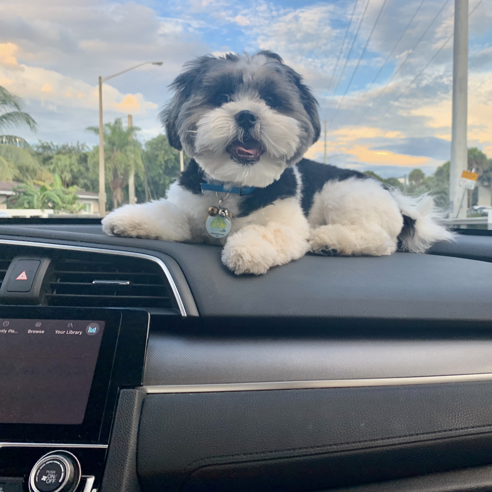
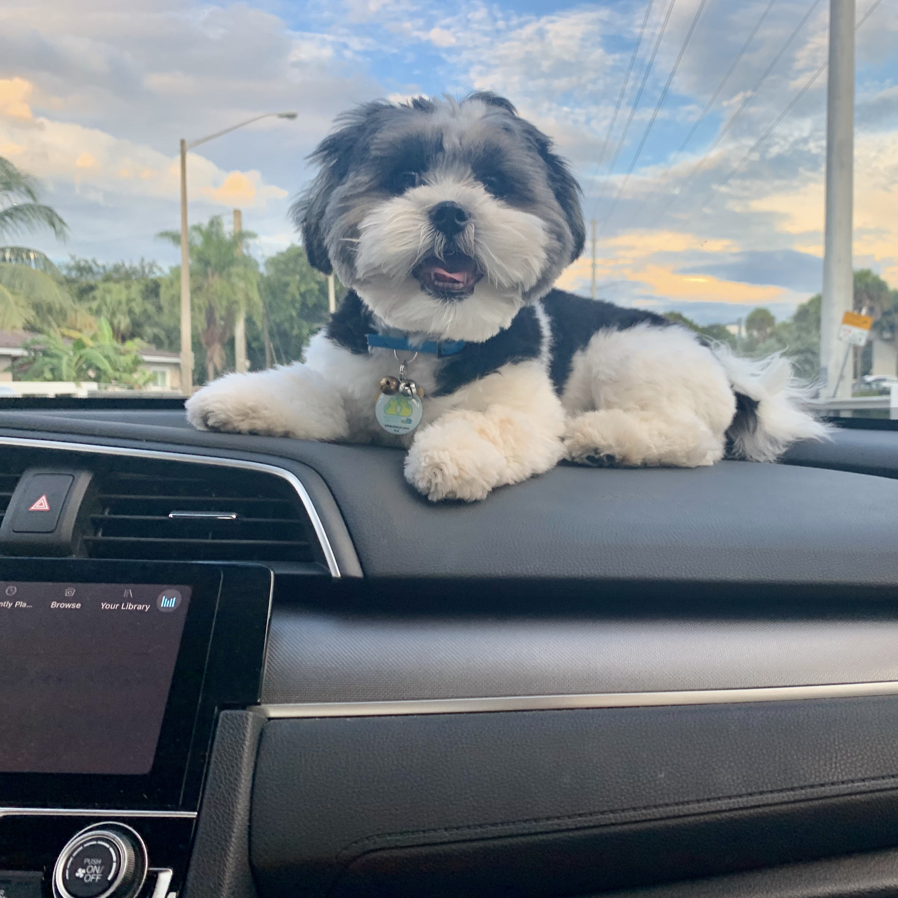

About Shih Tzu's

The Shih Tzu is a sturdy, lively, alert toy dog with long flowing double coat. Befitting his noble Chinese ancestry as a highly valued, prized companion and palace pet, the Shih Tzu is proud of bearing, has a distinctively arrogant carriage with head well up and tail curved over the back. The coat, which comes in many colors, is worth the time you will put into it—few dogs are as beautiful as a well-groomed Shih Tzu.

CARE TIPS
A well-rounded care routine will help ensure that not only are you meeting your Shih Tzu's needs now, but also helping to prevent issues that can affect him both short and long-term.
- Make sure to feed them a nutricious diet and adjust the amount of food according to their developmental stage
- Allow your shih tzu to exercise at least 3 times per day to burn all their energy
- Brush their teeth regularly to avoid any tartar buildup
- Take them to the vet for a wellness check every few months to make sure they dont have any health issues

 

- Puppy-proof your house to make sure you don't endanger your shih tzu
- Make sure your shih tzu is hydrated when you take them out for walks during the summer months
- Protect your shih tzu against fleas, ticks and heartworm by giving them their medication every month
- Give shih tzu enough toys to keep them entertained when you have to leave them alone
FEEDING
Luckily there aren’t any outlandish requirements when it comes to the Shih Tzu diet, but there are a couple of things you should keep an out for when choosing their food. Much like other toy dogs, the best food for the Shih Tzu is one that’s high in protein. This is because they burn calories faster, but as their stomachs are small, the food has to be low volume but calorie rich. The Shih Tzus’ defining luscious locks require care and attention, especially by including fat in their diets. Because their hair grows so rapidly, it’s important to ensure they’re getting all the good fats (Omega 3 and Omega 6) and Vitamin to keep their skin moisturized and hair healthy.
Dry kibble

Home-cooked food

Raw food

Canned food

GROOMING
Anyone new to the breed might look at the pictures of Shih Tzu Show Dogs and fall in love with that long, luxurious coat, neatly presented with an amazing top knot skillfully adorning the head and wrapped in lavish bow.
Bath

Hair trim

Blowdry

Ear cleaning

Nail clipping

Tooth Brushing